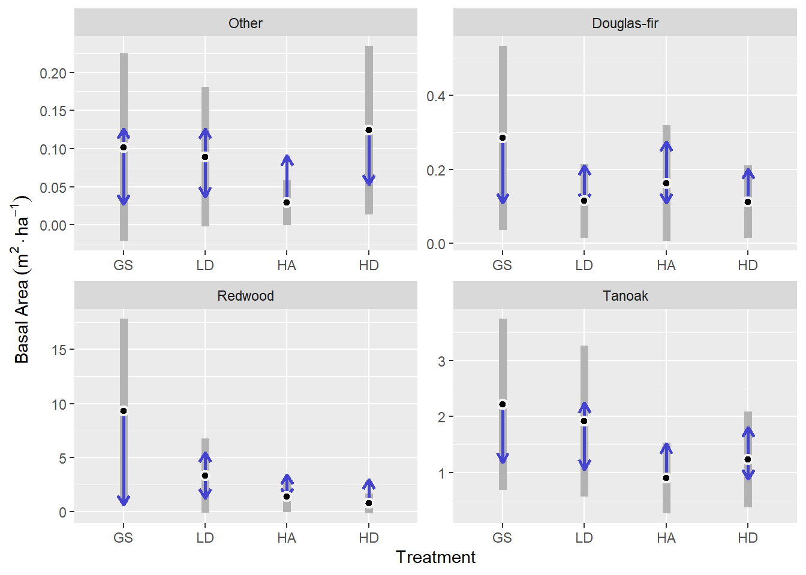
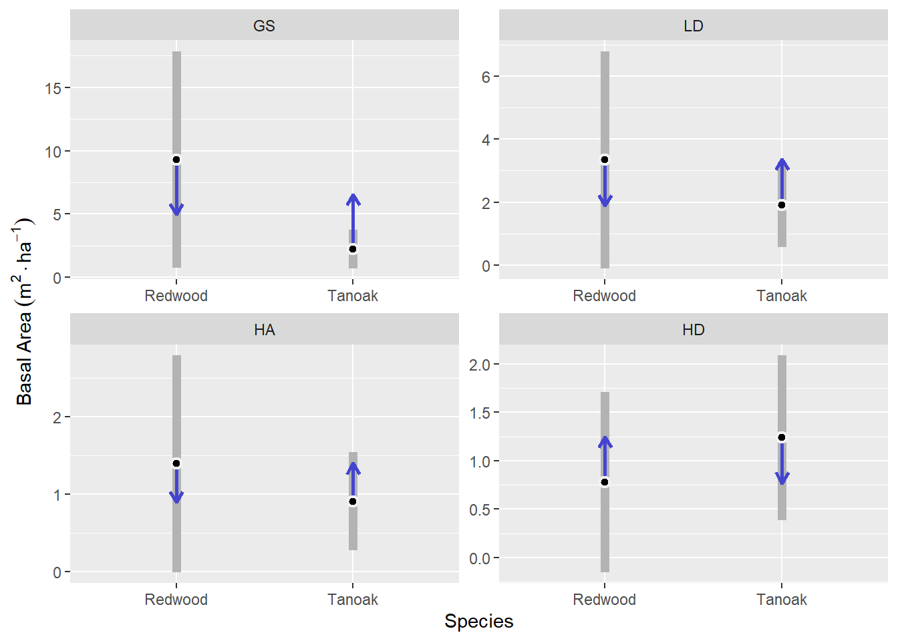
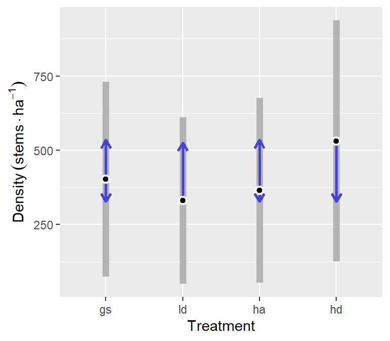
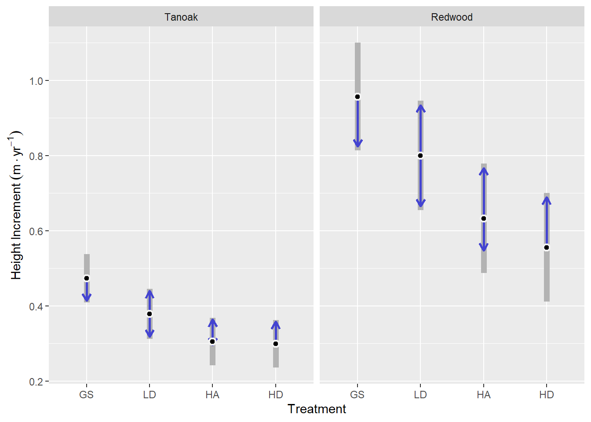
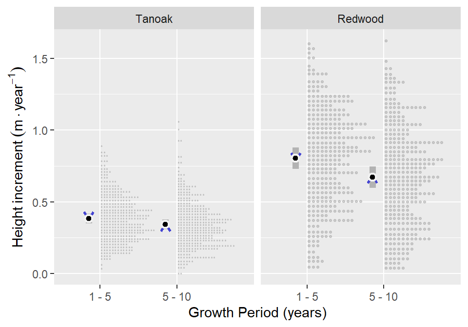
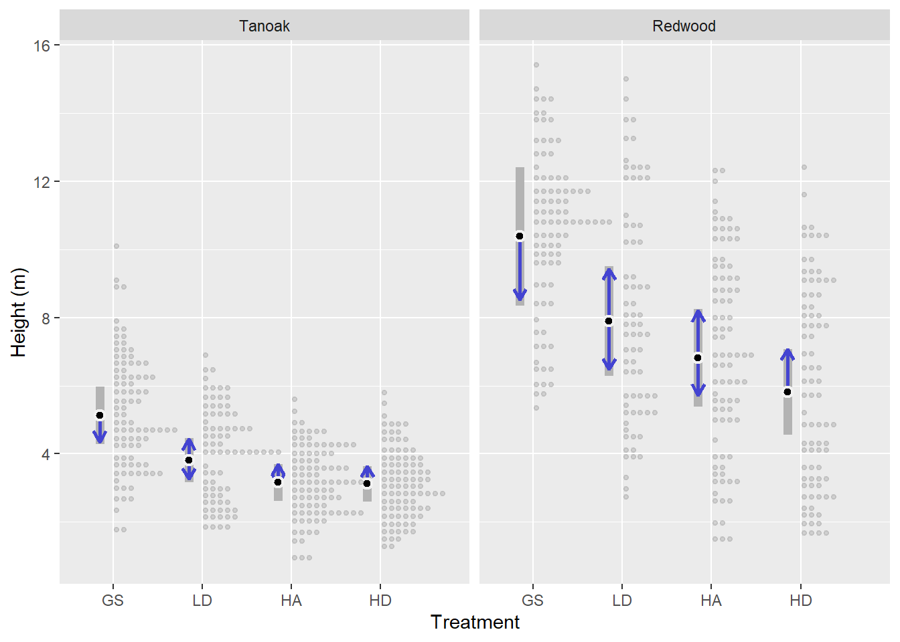
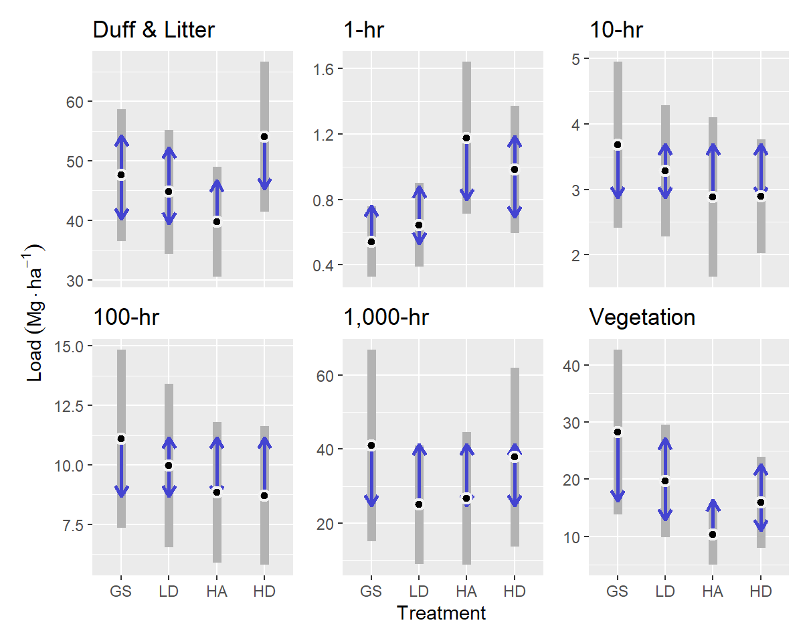
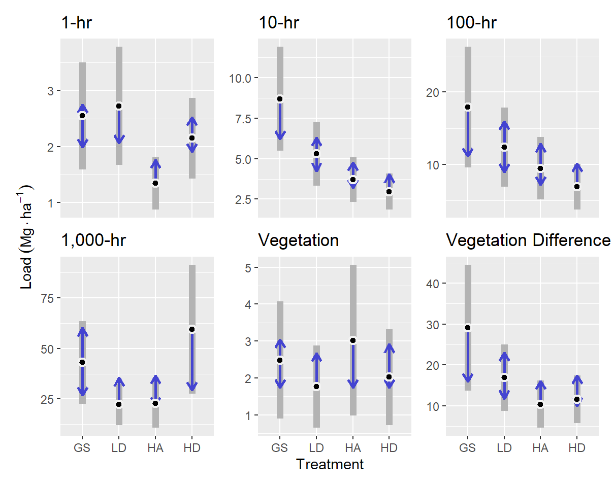
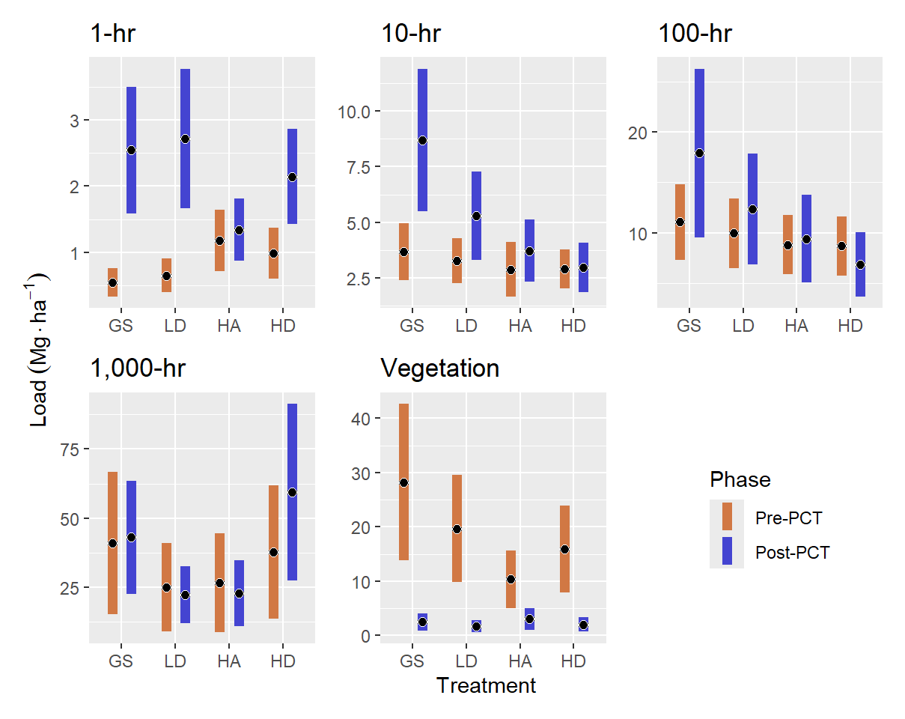

3 Results
3.1 Regeneration
3.1.1 Basal area
According to predictions made from this model, there was not enough evidence to support that treatments affected species basal area growth differentially. This was true for species individually and when considered together (data not shown).
Redwood regeneration showed the strongest apparent treatment response, with the greatest basal area observed in the GS treatment. LD and HD treatments were intermediate, while HD tended to have the lowest redwood basal area.
Tanoak regeneration basal area was intermediate relative to redwood and Douglas-fir. GS and LD treatments showed similar, comparatively higher responses, whereas HA and HD tended to be lower.
Douglas-fir regeneration was low across all treatments, with little apparent variation among them. GS showed the highest basal area, but overall differences were minimal.
Other species (grand fir, madrone, and California wax-myrtle) occurred at low densities across plots. Most plots contained few individuals, though one LD macro plot had notably higher counts. Basal area for other species was low across treatments overall, with HD tending to be highest and HA lowest, while GS and LD were intermediate.
Figure fig-regen-ba-rw-to highlights the rapid decline in redwood basal area relative to tanoak with increasing overstory retention. It also illustrates the greater uncertainty associated with redwood basal area in the GS treatment, as reflected by the wider confidence intervals compared to those of tanoak.

3.1.2 Douglas-fir counts
The selected model for Douglas-fir counts did not indicate any statistically significant differences between treatments. Generally, we expect about 2 seedlings per 4-meter-radius plot, or about 413 seedlings per hectare (Figure fig-df-counts).

3.2 Sprout heights
3.2.1 Height increment
The model selected based on AIC lacks a treatment x species interaction, suggesting that there is not evidence that treatments affected species differentially. It also lacks a treatment x year interaction. This means that there was not enough evidence to support that treatment was related to changes in growth rate.
The inclusion of treatment factors in the model (0.001 ≤ p < 0.03) indicated that the levels of treatment were associated with different growth rates across species and years. And the species x year interaction (p < 0.001) suggested that changes in growth rates were different for redwood and tanoak (Figure fig-sprout-ht-inc-treat).
For tanoak, height increment was greatest in the GS treatment at 0.48 m yr-1. This was about 0.17 m yr-1 more than in the HA and HD treatments, which were very similar at about 0.3 m yr-1.
Redwood followed a similar pattern but with more pronounced differences between treatments. Height increment for redwood in the GS treatment was 0.96 m yr-1, which was about 0.4 m yr-1 greater than in the HD treatment (p = 0). Additionally, there was evidence that the GS treatment led to greater height increment than the LD treatment by about 0.17 m yr-1 (p = 0). And the LD treatment was higher than the HA treatment by about 0.15 m yr-1 (p = 0).

Redwood growth slowed from 0.80 to 0.67 m yr-1 in the second period and tanoak slowed from 0.39 to 0.34 m yr-1.
Redwood grew faster than tanoak, but slowed down more relative to it in the second period. Height increment for redwood was 0.42 m yr-1 greater than tanoak in the first period and 0.33 m yr-1 greater than tanoak in the second period (Figure fig-sprout-ht-inc-year).

3.2.2 Height at year 10
Because the best model did not contain a species x treatment interaction for the mean response, treatment comparisons were parallel between species. The GS treatment resulted in greater heights in year 10 than the other treatments (0.001 < p < 0.05). Predicted mean height for redwood ranged from 10.64 m in the GS treatment to 6.3 m in the HD treatment. For tanoak, predicted mean height ranged from 5.2 m in the GS treatment to 3.08 m in the HD treatment. Predicted mean heights followed the pattern GS > LD > HA ≥ HD (Figure fig-sprout-ht-yr-10).

3.3 Fuels
3.3.1 Pre-pct
For Duff & Litter, the largest difference was between the HD and HA treatments. The HD treatment had about 54.4 Mg ha-1, and was about 14.39 Mg ha-1 greater than the HA treatment (p = 0.09). Generally, all treatments were similar, with estimated loading of around 47 Mg ha-1.
One-hour fuels were highest in the HA treatment, with an expected value of 1.2 Mg ha-1, which was about Mg ha-1 greater than in the GS treatment (p = 0.03). One-hour fuels in the LD and HD treatments were intermediate but the LD was more similar to the GS and the HD was more similar to the HA treatment.
Ten, hundred and thousand-hour fuels were statistically, very similar across treatments (p ≥ 0.7). Treatment averages had maximum differences of around 1, 3, and 10 Mg ha-1 for ten, hundred, and thousand-hour fuels, respectively.
Vegetative fuel loading was greatest in the GS treatment, with an expected value of 29.94 Mg ha-1, which was about 18.95 Mg ha-1 greater than in the HA treatment (p = 0.05) and LD and HD treatments were intermediate. (Figure fig-fuel-pre-pct).

3.3.2 Post-pct
Unlike pre-pct fuel loading which differed little among treatments in terms of fine dead surface fuels, the PCT treatment resulted in additional fine dead surface fuels that differed significantly among treatments. Whereas vegetation fuel loading was reduced and differences between treatments were lessened. Unlike pre-commercial thinning resulted in greater stratification of treatments (Figure fig-fuel-post-pct). One-hour fuels for most treatments were around 2.5 Mg ha-1, but the HA treatment was lower than these at about 1.38 Mg ha-1 (p <= ).
The GS treatment had the greatest 10-hr fuel loading with 9 Mg ha-1, which was greater than the LD, HA, and HD treatments by 3.5, 5.15, and 5.94 Mg ha-1, respectively ( p = 0.06, p < 0.001, and p = 0). The LD treatment also had about 2.43 Mg ha-1 more 10-hr fuels that the HD treatment (p = 0.03).
Hundred-hour fuels followed a similar trend as the 10-hr fuels. They were greatest in the GS treatment, with an average of about 19.12 Mg ha-1, which was about 11.69 Mg ha-1 greater than the HD treatment (p = 0.03).
Thousand-hour fuels were greatest in the HD treatment, with an average of about 60.48 Mg ha-1, which was about 37.71 Mg ha-1 greater than the LD and HA treatments (p <= 0.14). The GS treatment was intermediate.
Fuel loading for live vegetation was similar across treatments at around 2.3 Mg ha-1.
The difference in vegetation loading before and after PCT was greatest in the GS treatment at about 29.6 Mg ha-1, which was greater than the HA and HD treatments by about 18 Mg ha-1 (p = 0.09 and p = 0.05, respectively). The LD treatment was intermediate.

3.3.3 Pre-post commercial thinning comparison
The PCT of 10-year-old vegetation dramatically reduced live surface fuels, predictably leading to varying increases in loading across 1- 10- and 100-hr fuels. Specifically PCT led to a small increase in average 100-hr fuel loading, only for the GS treatment, increased 10-hr fuels in the GS and LD treatments, and increased 1-hr fuels for all but the HA treatment (Figure fig-fuel-pct-comparison). However these results were not statistically comparable, due to slightly different model structures.
